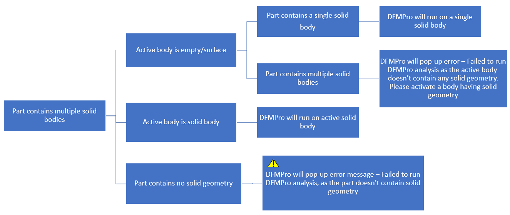
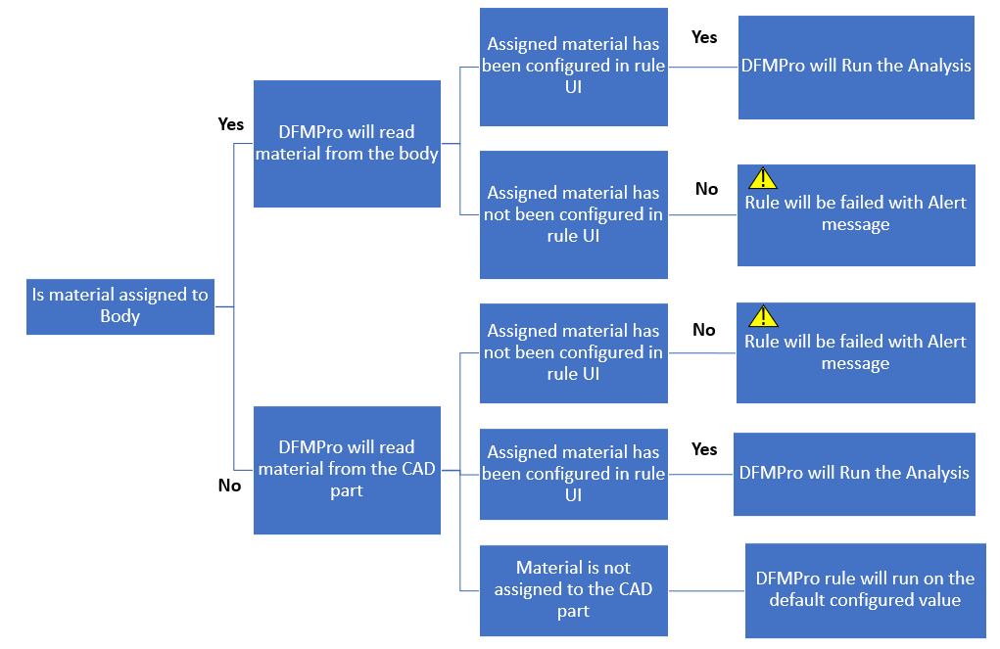

マルチボディのパーツ設計の場合、ユーザーが他のモジュールを実行すると、DFMPro はアクティブなソリッドボディに対して実行されます。
以下のフローチャートは、他のモジュールにおけるマルチボディケースを説明しています：

以下のフローチャートは、マルチボディパーツケースにおける材料選択の動作を説明しています：

注記：
上記のワークフローは、Read Material for CAD Attribute/Parameter 設定に適用されます。
マルチボディのパーツ設計の場合、eDrawings レポートでは失敗インスタンスがワイヤーフレームで表示されます。
以下の PMI ベースおよび共通ルールは、すべてのボディに対して実行されます。
アセンブリ ルール： Interference Detection
溶接ルール： Weld Leg For T- Joint - このルールは、コンポーネント内に存在するアクティブなソリッドボディに対して実行されます。
アセンブリ固有ルール： 例：Minimum Clearance Between Tubes、Minimum Clearance Between Components、留め具（Fastener）ルール
アセンブリ固有ルールについて、各アセンブリコンポーネントに2つを超えるソリッドボディが含まれている場合、DFMPro はコンポーネント内のアクティブなソリッドボディに対して実行されます。
2つのコンポーネントのうち、片方のコンポーネントがアクティブな空ボディを持つ場合、このケースではルールは合格になります。